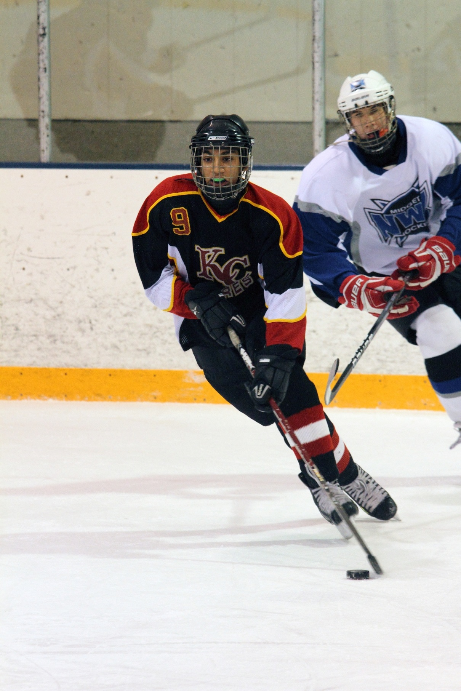
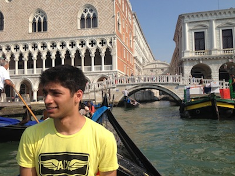

A second year Mechanical Engineering student at the University of Alberta, hoping to receive his BSc before moving on to graduate studies. Completed first year of engineering with a 3.8 GPA and whilst being a part of multiple student groups.
Previously graduated from Strathcona Composite High School in 2012, achieving Honours with Distinction status and almost $10,000 in scholarships.
Lives an active lifestyle, has played minor hockey and soccer for 13 years before graduating the programs. Currently involved in recreational Muay Thai and likes running outdoors.
A member of Pi Kappa Alpha Fraternity and Golden Key International Honours Society.

Is currently holding the position of General Faculties Councillor for the Faculty of Engineering. In his fraternity he is the Chairman of Membership Education, involved in creating university and life learning experiences outside of the classroom.
In his community he is part of the Edmonton Buddhist Youth Group, which is involved in community fundraising and volunteer work. Has previously been a volunteer time-keeper and referee during Edmonton Minor Hockey Week.

The son of two engineers, he has had a passion for engineering starting from an early age.
Has traveled to multiple countries including Italy, France, Switzerland, Sri Lanka. Can speak English and Sinhalese fluently, and French competently.